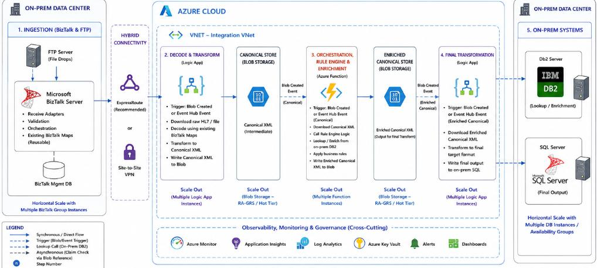

Healthcare • Phase 1 Complete
Phase 1 of a strategic cloud migration: a hybrid BizTalk & Azure architecture that integrated EMR clinical workflows with legacy mainframe and Db2 systems — while laying the foundation for full Azure modernization in Phase 2.

A multi-hospital health system was operating a complex portfolio of clinical integrations built on BizTalk Server over more than a decade. These integrations connected EMR platforms with legacy mainframe systems and IBM Db2 databases — handling patient admissions, discharge summaries, lab results, and clinical order workflows in HL7 v2 format.
As the organization grew through acquisitions and its EMR footprint expanded, the BizTalk environment became a critical bottleneck. Maintaining the aging middleware required scarce on-premise expertise, and the system’s monolithic architecture made it difficult to scale individual integration workloads independently.
The mandate was clear: modernize the integration layer without disrupting clinical operations — and do it in a way that progressively moved the organization toward the cloud rather than requiring a high-risk big-bang cutover.
Three constraints defined the engagement from day one:
Relay615 designed a five-stage hybrid architecture that kept BizTalk in place for what it does well — ingestion, validation, and existing map execution — while moving orchestration, rule processing, and enrichment into Azure. This allowed the team to deliver immediate cloud value without requiring a full BizTalk replacement in Phase 1.
Secure hybrid connectivity was established via Azure ExpressRoute (with a Site-to-Site VPN fallback), creating a private, low-latency path between the on-premise data center and the Azure Virtual Network housing all integration components.
BizTalk Server continued to handle the intake of HL7 v2 messages from EMR systems via FTP file drops and receive adapters. Existing receive ports, validation pipelines, and BizTalk maps were reused without modification — preserving years of encoded business logic and minimizing migration risk. BizTalk Management DB retained full orchestration visibility for on-prem operations.
An Azure Logic App (Standard tier) consumed messages forwarded from BizTalk via Event Hub or Blob trigger. It decoded raw HL7 segments, applied existing BizTalk maps through a reuse adapter, and transformed the message into a Canonical XML format — the internal representation that all downstream Azure services would operate on. The canonical document was written to Azure Blob Storage (Hot Tier, RA-GRS).
A Blob Created event triggered an Azure Function that acted as the orchestration and enrichment engine. The Function consumed the canonical XML, evaluated it against a configurable rule engine (routing logic, message classification, conditional processing), and performed lookup calls to on-premise IBM Db2 via a hybrid connection for patient and provider enrichment data. The enriched canonical document was written to a separate Blob Storage container.
A second Logic App performed the final transformation from enriched canonical XML into the target format required by each downstream on-premise system. Output was written directly to on-premise SQL Server (via a hybrid connection through the ExpressRoute network), completing the end-to-end flow. Each downstream system received data in its own native format without any modification to its existing interfaces.
Full end-to-end observability was built in from the start rather than added after go-live. Azure Monitor, Application Insights, and Log Analytics provided unified telemetry across Logic Apps and Azure Functions. Azure Key Vault managed all connection strings, credentials, and shared secrets. Alert rules and dashboards gave operations teams real-time visibility into message throughput, error rates, and processing latency.
The hybrid architecture delivered immediate value by moving orchestration, enrichment, and observability into Azure — the components with the highest operational burden — while keeping BizTalk in place as a stable, proven ingestion layer. This approach de-risked Phase 1 significantly and produced a clean, well-documented foundation for Phase 2, which will migrate BizTalk ingestion itself into Azure Logic Apps and retire the on-premise middleware footprint entirely.
Phase 2 will complete the migration by replacing the on-premise BizTalk ingestion layer with an Azure-native alternative. Key workstreams include: